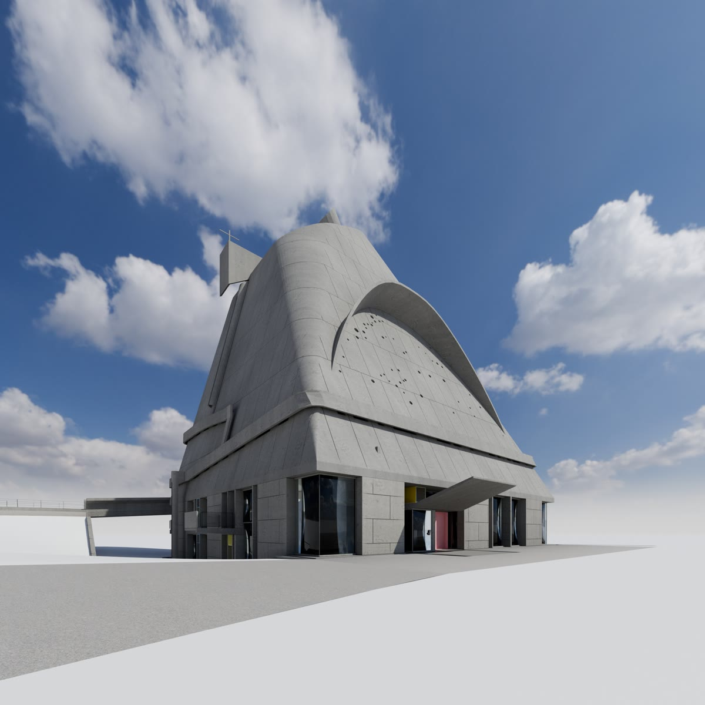
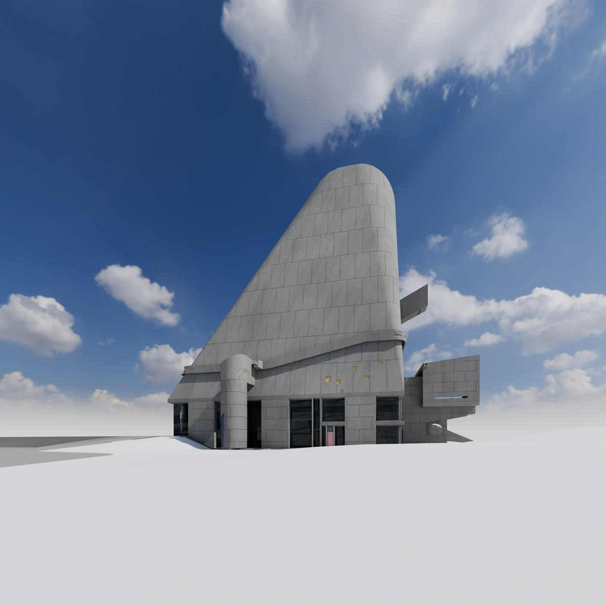
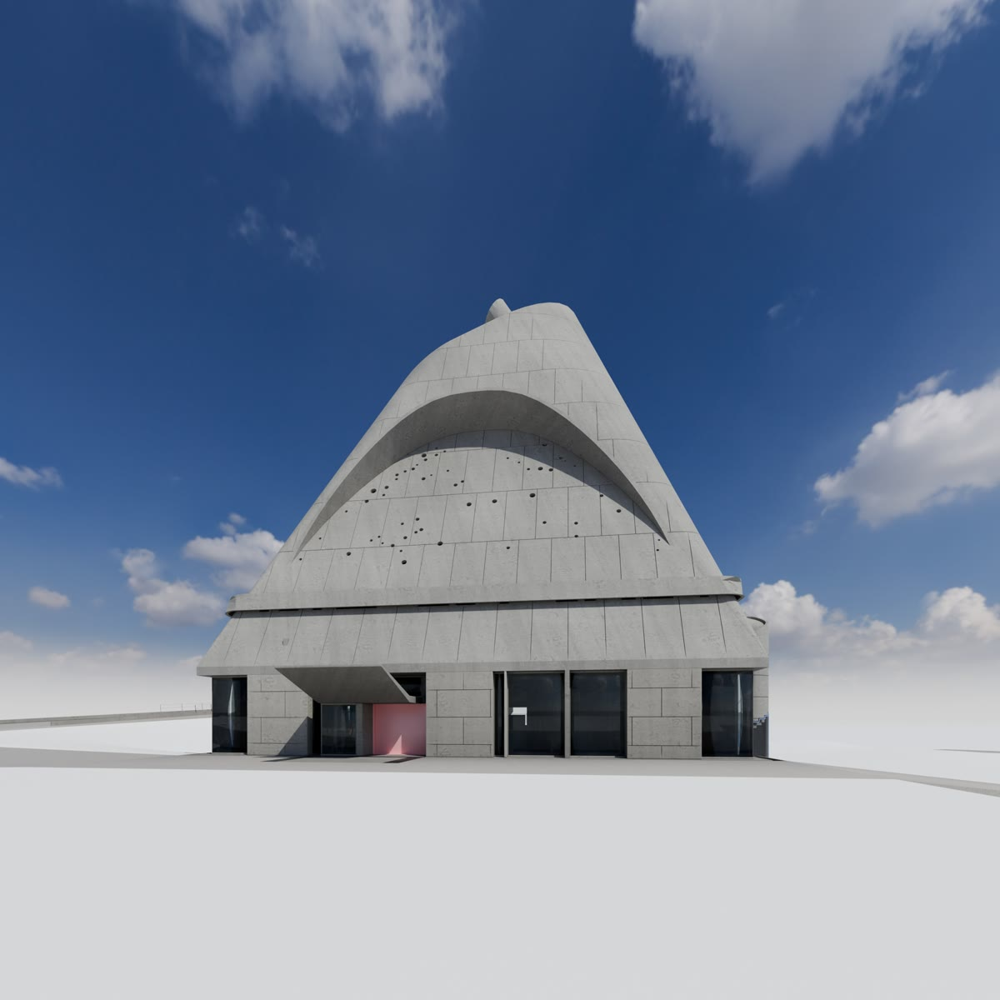
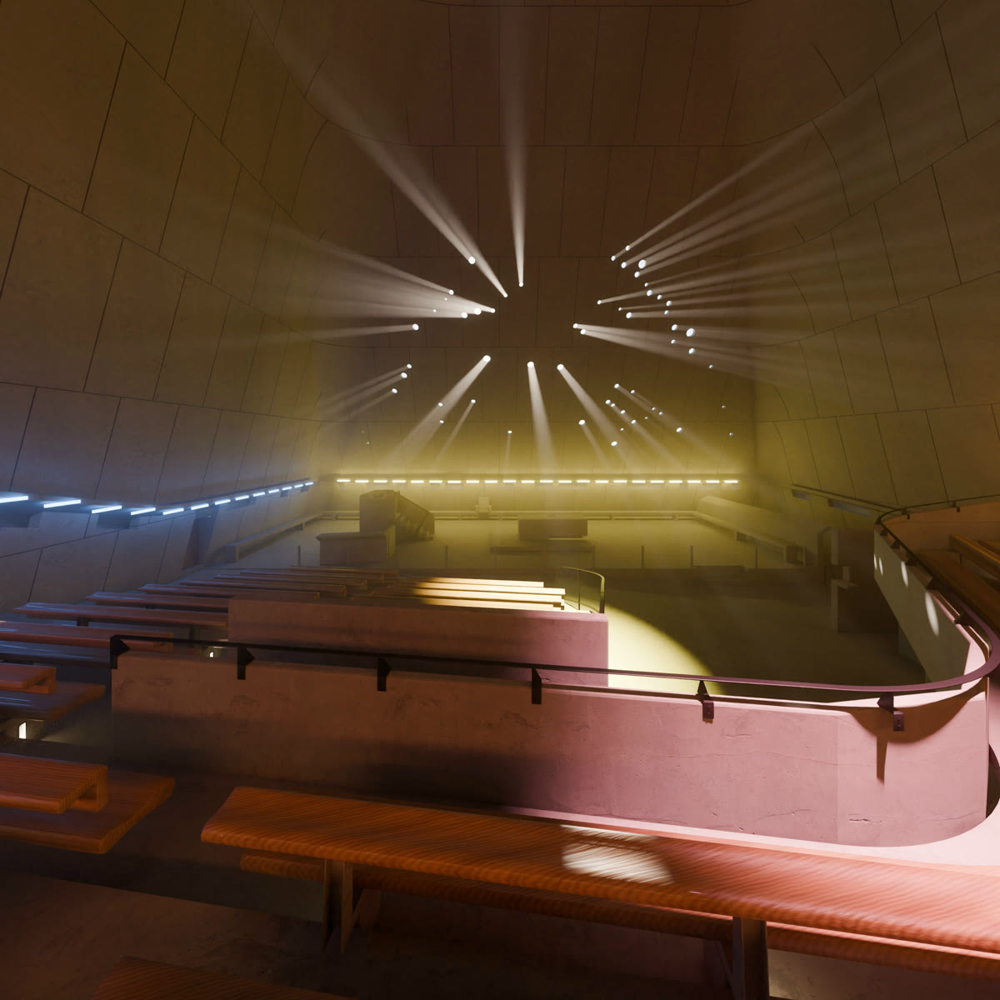
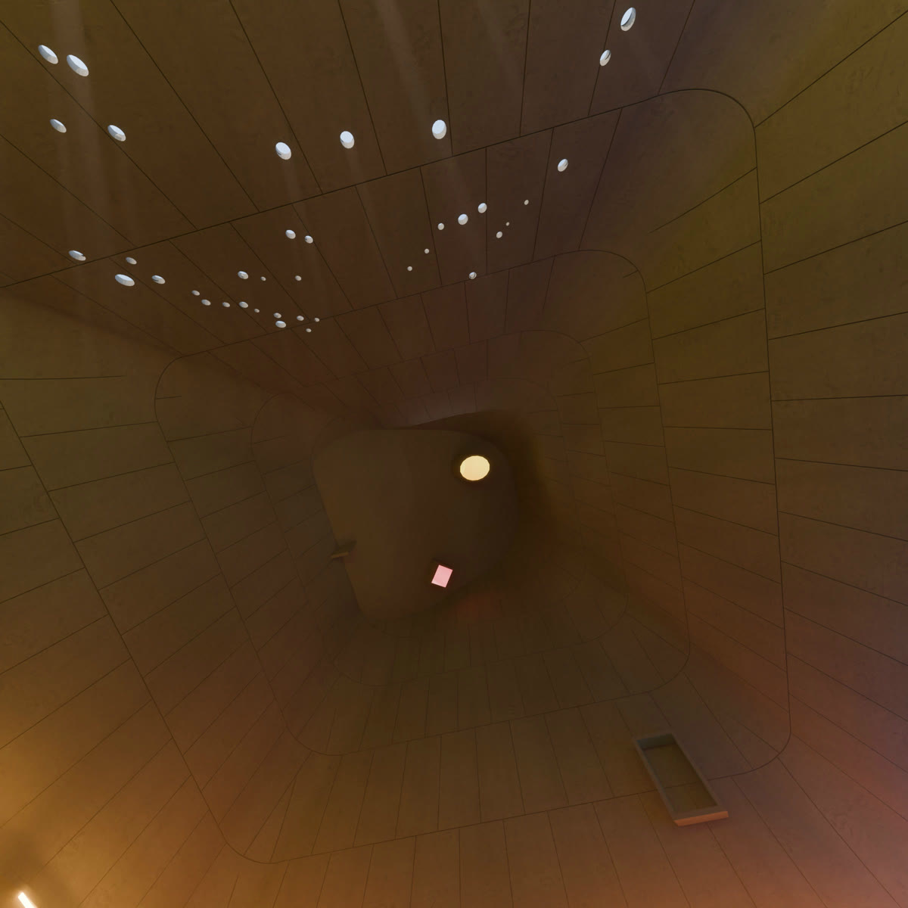
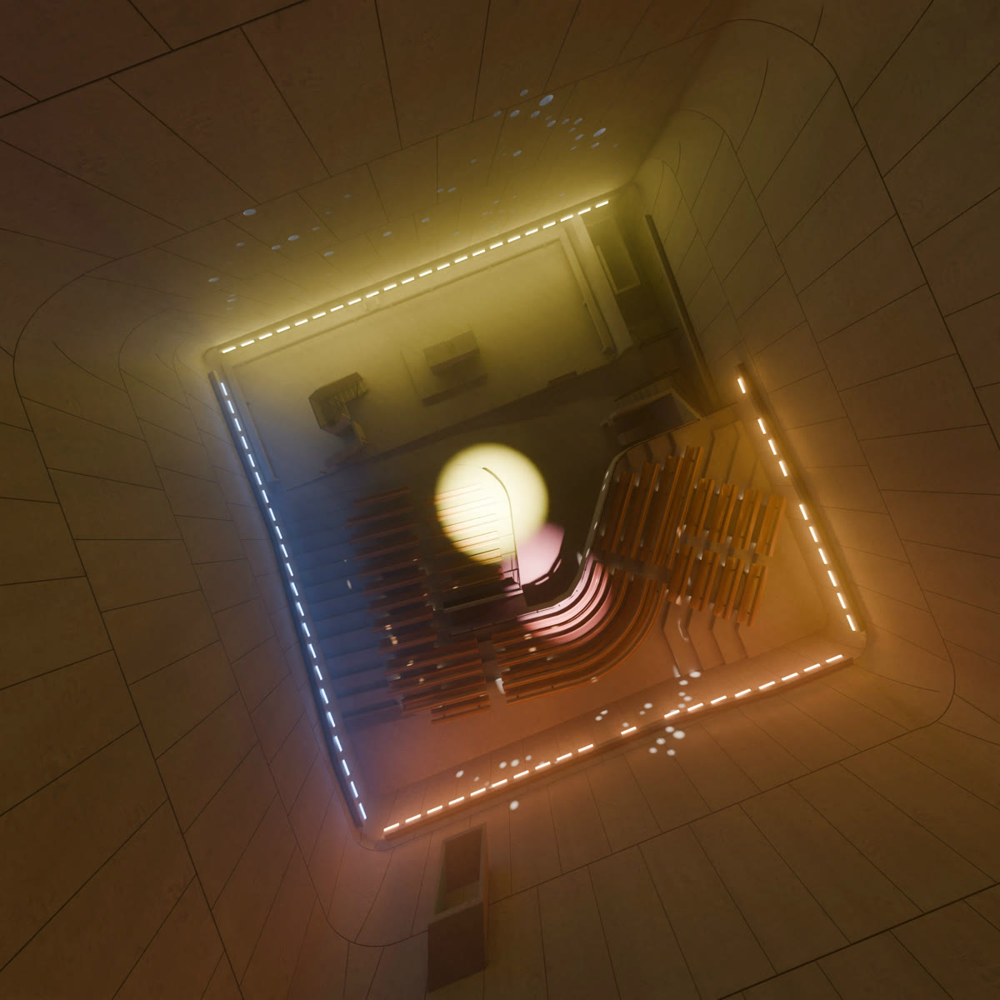

Le Corbusier & José Oubrerie
Saint-Pierre,
Saint-Pierre,
Firminya visual study
Bare concrete, a square plan rising to a cone, and the sun as its only ornament.
Spatial viewertap to explore
≈ 33 m cone height
≈ 25 m square plan
live sun, drag the slider
≈ 25 m square plan
live sun, drag the slider
Loading the model…
Move the sun · lights switch on at dusk
01Views



02Interior



360°
Loading panorama…
Viewpoint
Zoom
03A day
Outside
06:00
solar time
Inside
06:00
solar time
04Idea
A parish church for a new workers’ district, in concrete that lets the sun do the decorating.
Commissioned in 1961 by Father Roger Tardy for Firminy-Vert, on a former quarry.
A square plan climbs four levels into a truncated cone. Inside, no windows: roof cannons and a wall of small openings bring the sun in.
Le Corbusier died in 1965. José Oubrerie carried the building through stops and restarts to its opening in 2006.